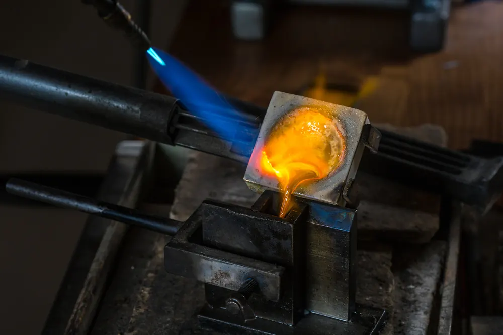

珠寶製作流程：從蠟模到成品的手藝
你看見的是閃亮的成品，看不見的是它被火燒、被酸泡、被拋光磨了整整兩週——珠寶是手工藝的接力賽。

核心定義
現代珠寶製作的核心是「失蠟鑄造」（lost-wax casting）：先雕蠟模 → 包石膏 → 燒掉蠟 → 注入金屬 → 取出金胚 → 執模 → 鑲嵌 → 拋光。一件訂製珠寶，從設計到成品通常需要一至三週。
量產珠寶則用「橡膠模」複製蠟模（開模），再走同一條鑄造線——所以「手工雕蠟」與「開模複製」是訂製與量產的分水嶺。
特徵與分類
| 工序 | 做什麼 | 工具 | 影響 |
|---|---|---|---|
| 設計 | 繪圖/3D 建模 | CAD 軟體 | 造型決定一切 |
| 雕蠟/打印 | 做蠟模 | 雕蠟刀/3D 列印機 | 細節精緻度 |
| 澆鑄 | 燒蠟注金 | 離心機/真空機 | 金屬純度與氣孔 |
| 執模 | 修整金胚 | 銼刀/火槍 | 形狀與平整 |
| 鑲嵌 | 鑲寶石 | 鑲石工具 | 寶石安全 |
| 拋光 | 打磨電鍍 | 拋光輪/電鍍槽 | 光澤與耐用 |
現代 3D 列印蠟模（CAD/CAM）讓複雜設計快速成形——但「手工感」依然是高級珠寶的價值所在；頂級珠寶仍以手工雕蠟起家。
科學原理
失蠟鑄造的科學：蠟模外包石膏漿，高溫燒結後蠟熔化流出（「失蠟」之名由此而來），留下空腔；熔融金屬在離心力或真空下注入空腔，冷卻後即得金屬胚。這套工藝源自四千年前的青銅時代，至今仍是珠寶生產的主流。
澆鑄的關鍵是「避免氣孔與收縮」：金屬冷卻時體積收縮，若補縮不足會產生內部空洞——高品質珠寶會用真空鑄造降低氣孔率，再用 X 光檢查內部缺陷。
鑑定與鑑別方法
- 看內壁：執模後內壁應平整無砂孔
- 看焊接點：焊接處應無色差與虛焊
- 看拋光：表面無橘皮紋、無拋光膏殘留
- 看鑲嵌：寶石與金屬貼合、無翹邊
- 看印記：成品的材質與純度印記是否清晰
市場行情與保養建議
工費行情（2026 年台灣參考）：簡單素圈訂製工費約新台幣數千元；含鑲嵌與雕花的中高階訂製工費一至數萬元；品牌高級珠寶的工費更常佔售價三成以上——「手工」是珠寶溢價的核心來源。
提醒：訂製珠寶請確認金屬純度、寶石來源與鑑定書；「手工打造」與「半手工執模」在市場上常被混用。價格僅供參考，非投資建議。
常見誤區
現代 3D 列印蠟模精度可達微米級，能做出手工難以完成的鏤空結構——它只是工具，成品好壞看設計與後處理。
高級量產珠寶也需手工執模與拋光；粗糙的手工反而輸給精密機製。關鍵是工序品質，不是「有沒有機器」。
冷知識
美索不達米亞的青銅雕像就用了失蠟法——你手上的金戒指，用的是和四千年前一樣的工藝原理。
焊接要控制火焰溫度到剛剛好——太熱金屬會流、太冷焊不住。經驗老到的師傅，一把火槍走天下。
反直覺觀點
高級珠寶的成本裡，設計與工藝常常超過金屬與寶石的原料成本——你買的「品牌溢價」，其實是「工藝溢價」。
機製的優勢是重複精度——同一設計產一百件，件件一致；手工則每一件都有細微差異。有人買均勻，有人買差異。